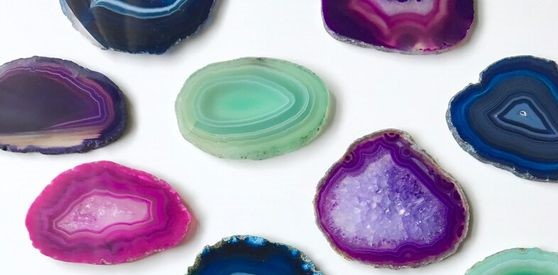

ÁGATA: poderes y usos
El ágata es una variedad microcristalina del grupo del cuarzo, un tipo de calcedonia de varios colores que suele presentar bandas cromáticas. Existen muchos tipos de ágatas, su color depende de los diferentes materiales que pueda contener.
Este mineral debe su nombre al río Achates, hoy Dirillo, al sur de Sicilia, donde era abundante. Presente en muchas partes del mundo y rica en hermosos colores, fue utilizada desde la antigüedad en Egipto y Mesopotamia, hebreos y romanos, que la utilizaba para alejar las tormentas y proteger las cosechas. En la Edad Media se utilizaba para tratar las mordeduras de serpiente y las picaduras de insectos. Para los celtas, se asocia con Ceridwen, diosa de la fertilidad y la muerte, para los griegos se asocia con la diosa griega de la tierra y la naturaleza y para el Islam ofrece protección y longevidad a su portador.
Poderes del ágata
Este mineral a menudo se ha relacionado desde hace siglos con el hombre y la naturaleza, promoviendo las buenas cosechas y protegiéndonos contra picaduras de serpientes, insectos o escorpiones.
Tiene la principal propiedad de ser una piedra de suerte y una piedra de arraigo. Sus propiedades y virtudes se basan en la contribución al equilibrio físico, emocional e intelectual. Permite a quienes lo llevan superar cualquier tipo de bloqueo energético. La piedra ágata ayuda a estabilizar el aura o la energía del cuerpo físico.
También es una piedra protectora contra los pequeños problemas diarios. De hecho, tiene la reputación de favorecer el equilibrio de cuerpo y mente, evitando las caídas, así como los bloqueos de energía. Reduce los problemas de sangre y de piel y preserva la salud de los pulmones.
Tiene propiedades curativas, reduce los dolores musculares, articulares y nerviosos. Se puede
utilizar para combatir problemas de la piel, ya que ayuda a mejorar la calidad de la piel y
a combatir las irritaciones, rojeces y pequeñas imperfecciones, alivia las picaduras de insectos.
Por último, el ágata estimula la circulación de los fluidos y regula la respiración. De este modo,
promueve la relajación, el bienestar en todo el cuerpo y reduce los problemas de sangre. Cuando
actúa sobre el chakra sagrado, contribuye al florecimiento de la vida sexual.

¿A qué chakra pertenece?
La acción de la piedra ágata depende de los chakras sobre los que actúa y, por tanto, de su
color. En efecto, el ágata es una piedra que se presenta en casi todos los colores. Dependiendo
de la variedad que elija, puede actuar sobre diferentes chakras. Por ejemplo, las ágatas negras,
rojas, naranjas y amarillas actúan sobre los chakras inferiores, también llamados chakras físicos.
De abajo a arriba, están el chakra raíz, el chakra sagrado y el chakra del plexo solar. Estos
chakras se centran en la conexión a tierra, la vitalidad, la fuerza creativa y la sexualidad. Las
ágatas verdes y rosas actúan sobre el chakra del corazón. Cuando se activa, el chakra del corazón
promueve el amor, la sinceridad, la bondad y la ternura. Al sanar sus heridas emocionales, este
chakra le ayuda a abrir su corazón, soltarse y confiar.
Las ágatas azules y violetas actúan sobre los chakras de la garganta y del tercer ojo. Estos
chakras representan la espiritualidad, la comunicación, la apertura, la personalidad y la intuición.
Le ayudan a ser más espontáneo e intuitivo en su vida cotidiana. Por último, las ágatas blancas y
beige actúan sobre el chakra coronal. Situado en la parte superior del cráneo, el chakra coronal
promueve la sabiduría, el despertar espiritual, el altruismo y el conocimiento. Como sede del alma
y la espiritualidad, este chakra proporciona una conexión entre la tierra y el cosmos. Tenga en
cuenta que algunas ágatas tienen más de un color y, por tanto, pueden actuar sobre varios chakras
al mismo tiempo.

Usos del ágata
- El simple hecho de colocar una ágata en su casa o lugar de trabajo le aportará sus dos principales virtudes: la calma y la buena suerte. Si coloca su ágata en la habitación de alguien que está sufriendo, la piedra de ágata le dará positividad y valor.
- Las variedades de ágata musgosa y ágata dendrítica suelen usarse para poner en las plantas para favorecer su crecimiento y salud. Pones el mineral en la tierra de la planta encima de sus raices.
- El Ágata es utilizada para promover la paz y la estabilidad interior, solo debes sostener un trozo de esta piedra entre tus manos para calmar tu mente.
- Si te duele el estómago, coloca una roca de Ágata sobre el abdomen, calmará el malestar de manera rápida.
- Colocar una de estas piedra en el pecho ayuda a mejorar los problemas cardiacos y de los vasos sanguíneos. Si estás embarazada ayudará a fomentar la lactancia.
- Llevar un accesorio elaborado con piedra de Ágata, te ayudara a promover la confianza, amor propio y el coraje.
Cómo limpiar el ágata
Todas las variedades de ágata pueden recargarse con agua, sal, tierra o incienso. El método más sencillo es:
- Coloca la piedra ágata en un envase de vidrio.
- Tapa la piedra con agua destilada o de manantial.
- Vierte un poco de sal y dejala actuar durante unas horas bajo el sol, excepto que sea el ágata azul que deberá ponerse bajo la luna.
- Luego limpia la con un paño suave y limpio para evitar que se raye o desluzca los pateriales que rodean la piedra
- Si la coloca sobre un cúmulo de cuarzo o sobre una geoda de amatista mientras realiza la limpieza, los poderes del ágata se multiplicarán por diez.
- Puede realizar estos rituales de limpieza y recarga una vez al mes o una vez a la semana, dependiendo de cómo se sienta y de la frecuencia con la que lleve la piedra.
Resumen
- Favorece la salud y bienestar.
- Evita el insomnio.
- Favorece el equilibrio de cuerpo y mente.
- Evita enfermedades sangíneas y de piel.
- Te protege de problemas.
- Favorece la fertilidad.
- Calma la mente.
- Mitiga las preocupaciones, los traumas, los episodios de ansiedad.
- Armoniza el espacio.
- Transmuta la energía negativa.
- Elimina los dolores de cabeza.
- Mejora el sueño y el descanso.
- Puedes llevarla suelta, como joya (colgante, anillo, pulsera...) o puedes dejarla en un ambiente.
- Se limpia con agua y sal, dejándola debajo de la luz del sol o la luna unas horas.